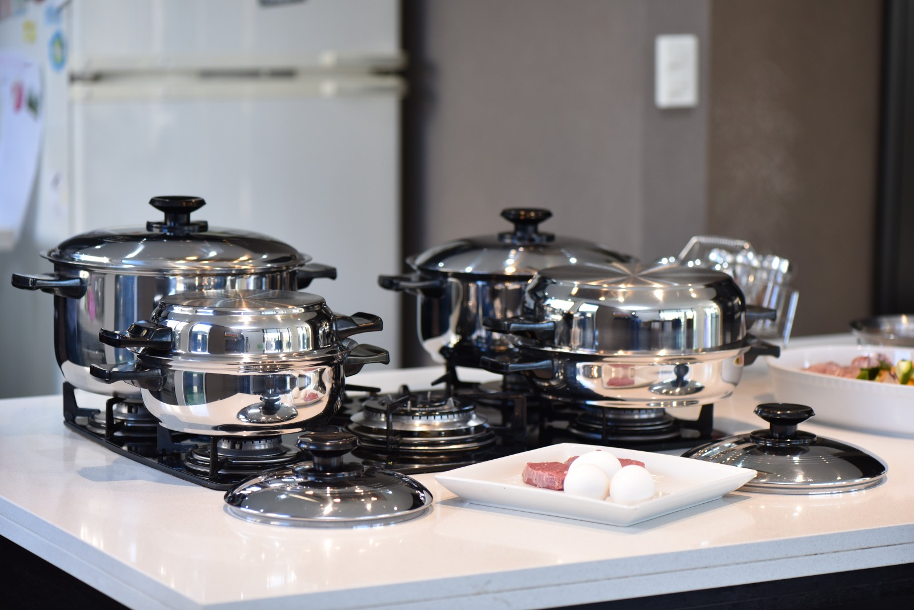

Qué es el acero quirúrgico 18/8
El mismo acero inoxidable de grado médico que se usa en instrumental quirúrgico, llevado a tu cocina. Sin recubrimientos que se descascaran, sin químicos que migren a la comida.

18% cromo, 8% níquel
El "18/8" no es un nombre comercial: describe la aleación. El cromo forma una capa que protege contra la corrosión y el níquel le da resistencia y ese brillo parejo. El resultado es una superficie estable que no reacciona con los alimentos ácidos ni libera partículas como sí pueden hacerlo otros materiales.
Por qué cambia tu forma de cocinar
Sin aceite ni agua
La conducción pareja del calor y las tapas con cierre termo-sellador permiten cocinar en el jugo natural de los alimentos. Menos grasas agregadas, más sabor propio.
Conserva los nutrientes
Cocinar al vapor en su propio líquido, a fuego bajo, evita que las vitaminas se diluyan y se tiren con el agua de cocción. Las verduras mantienen color, textura y nutrientes.
Cero tóxicos
Sin teflón, sin PFOA, sin recubrimientos antiadherentes que se rayan y terminan en la comida. Es solo acero.
Cómo cuidar tu batería
- Primer uso: lavá con agua tibia y detergente suave antes de estrenar.
- Fuego: arrancá a fuego medio. El acero conduce muy bien, no necesita llama alta.
- Limpieza: esponja suave y detergente. Para marcas de calor, una pasta de bicarbonato y agua devuelve el brillo.
- Evitá: golpes secos en frío y lavandina concentrada por tiempo prolongado.
- Inducción: toda la línea es apta para cocinas de inducción, gas, eléctricas y vitrocerámicas.
Garantía de por vida
Si una pieza presenta un defecto de fabricación, la reponemos. Buscamos que tu Princessware dure generaciones, no temporadas.